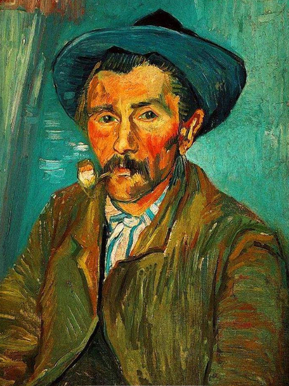

主题
梵高的作品中充满天然的悲悯情怀和苦难意识。例如在梵高艺术生涯的初期，绘画最多的题材是矿区阴惨的场景和劳作的矿工。在埃顿时期，落日的翻滚、日里的农夫和农妇更多出现在他作品中。
到多伦特和海牙时期，梵高的作品中开始频繁出现哭泣的女人、足两姗的老树以及城市救济院中的老人孤儿、驾车的老马、劳作的农夫等等。
题材
梵高对农民、对田野生活、对乡村田野风光有着很高的热情，他喜爱农民的一切，尤其是向日葵、麦田、莺尾花、豌豆花等。他经常选取这些散发着泥土清香的物象作为自己的绘画题材，在他短暂的艺术生涯中，梵高凭借着自己敏锐的艺术感知力深情地、细致地描绘着这些质朴、自然的风景、静物及人物，他也因此被称为"画家中最纯粹的画家"。与那些华丽璀璨的绘画相比，梵高的画更多的是朴实和隽永，他将自己无限的激情倾注于这些朴素的花朵和田野生活中，使画作产生了一种无法超越、无法模仿的艺术魔力。梵高曾经画过许多有关向日葵的画，虽然每次绘制的向日葵数目不一样，花朵的姿态也都不一样，但是它们都体现出了一种饱满和劲头。此外，梵高还经常选用麦田作为自己的绘画题材，从他所描绘的各式麦田的画作似乎可以感知到麦田里所散发出的一兹兹悲沧之情。如梵高创作于奥维尔的《乌云笼罩下的麦田》就是以恶劣天气下连绵不绝的麦田作为题材，传递出了凄凉、寂寥、压抑和苦闷的情感。再如，《有乌鸦的麦田》也是以麦田作为主要题材，并在麦田上方加入了一群黑黑的乌鸦，从而呈现出了一种深深的绝望和死一般的沉寂之情。当然，除了这两种题材之外，梵高的绘画还涉及到许多题材物象，但无一例外，它们都是质朴无华的，是和生活紧密相关的。 [12]
色彩
梵高是一位色彩主义画家，他对色彩的偏好几乎达到了一种癫狂的状态，这虽然与他的精神疾病有着一定的联系，但是也不能否认梵高对于色彩的创造性的发现和表现。他的画作中的色彩都是较为奔放、夸张的，这也深深地影响了20世纪的表现主义和野兽派绘画。具体而言，梵高画作中奔放的色彩主要表现在以下三个方面:第一，用光亮明快的夸张色彩进行装饰。受新印象派画家毕沙罗、修拉等色彩技法的影响，梵高摒弃了绘画初期暗浊、沉重的色彩，开始采用一些高明度、高纯度、高亮度的色彩，创作出了一种极具现代感和时尚感的色彩装饰效果，他的油画也因此越发鲜亮起来。在所有的高纯度、高亮度的色彩之中，梵高最偏爱黄色，简单明了的黄色带有另外一层寓意，即象征着太阳和大地，代表着光明和希望。在黄色的带动之卜，梵高绘画作品的色彩明度和纯度对比都十分鲜明，产生了一种光亮明快的装饰美感。例如，梵高的《向日葵》就是以大面积的黄色作为主要基调，然后配以土黄色、柠檬黄及中黄色等，使观众产生一种五彩缤纷、璀璨炫目的视觉感受，也表现出了梵高对美好生活的向往。第二，用大色块的对比进行装饰。在装饰色彩中，大色块的并置对比是一种非常重要的表现手法，虽然这一表现手法早在梵高之前就己经提出，但在梵高的绘画中得到了最淋漓尽致的表现。梵高画作中的对比色常常是大块的且较为平整的，既简化概括，又能够增加画面的厚重感，而且借助色块的对比还可以产生一种和谐的视觉效果。例如，《夜晚的咖啡馆——室外景》就是用大色块的对比色进行装饰，黄橙色的灯光和深蓝色的夜空相互对比，使画面产生了一种纵深感，同时也生动地描绘出了人们的夜生活。第三，用绝对的黑白色进行缓冲。在绘画过程中，梵高除了追求画面色彩的明亮欢快及色块对比之外，还经常用黑白色来缓冲、协调色彩，其常常和对比色出现在同一个场景中。以《播种者》为例，画面分为上、下两个部分，上半部分是鲜亮的黄色，下半部分是明亮的紫色，两种颜色对比非常强烈，过渡也比较直接，会对受众的眼睛产生刺激。而梵高将画面中播种者的长裤画为白色，在黄色和紫色之间产生了一个隔断，受众的眼睛也得以获得片刻的休息。 [12]
造型
梵高绘画追求的是一种狂野的造型，厚重、粗犷的笔触带来的是一种直率而又单纯的表现方式，带有一定的力量和强度，他们强调的是"神"的传递，而非"形"的表现，这与古典主义所追求的"忠实地表现自然"的绘画理念有很大的差异。仔细看来，梵高画面中的形象在造型上都带有非常鲜明的个性的，有强烈的狂野性、粗放性，好似画家在激情的支配之卜随意挥洒而得来。受众在欣赏画面的时候也会被这种激情所浸染、震惊，会深切地感受到画家内心的呐喊。这种狂野的造型风格同画家所生活的时代、环境及人物性格有着很大的联系。因为梵高没有受过专业的美术教育，在造型方面完全以自己的内心情感作为主要标准。此外，梵高一生都生活在贫穷、困苦和疾病的缠绕之中，这对他的心理也产生了深深的影响，所以他画作中的形象造型都带有一种扭曲变形、狂野粗放，也正是这些因素让梵高产生了丰富的情感和深刻的认知。以《星夜》为例，该画作创作于梵高在圣雷米疗养院期问。这一时期梵高的病情时好时坏，神智也时而清醒时而糊涂，因此这一时期他的画作线条更加粗野，笔意也更加随意。在这幅画面中，梵高使用生动固执的短线笔组成激荡旋转的宇宙，夜空中的十颗星辰也是由流动的、长短粗细不一的线条组合而成，近景的柏树形象则如同一座撕裂燃烧的哥特式教堂。画面中的夜空、星星及柏树的造型都是十分夸张、狂野、奇怪的，让人捉摸不定。此外，这种奇怪狂野的造型使人如同陷入一片黄蓝漩涡之中，油然而生一种绝望和恐怖之情。
文森特·梵高